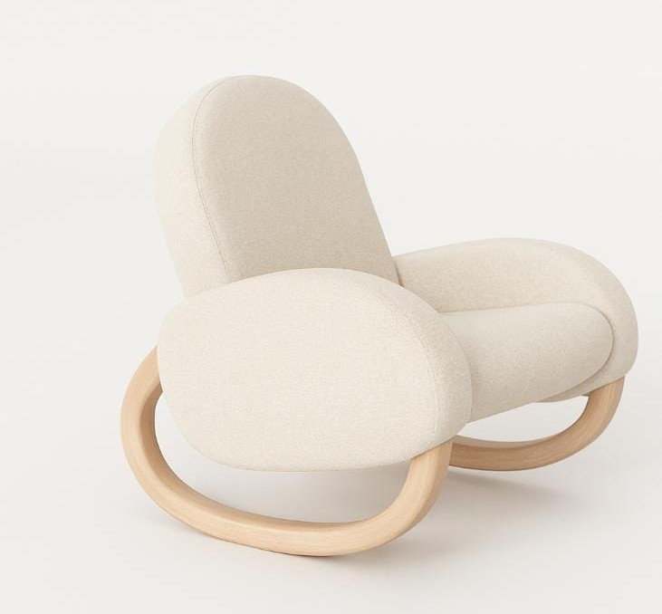

01
Minimal Nursery
Clean profiles, warm whites, and only the pieces that make the first year feel lighter.
Shop the EditCollections
Three quiet ways to build a nursery that feels warm, premium, and beautifully usable.
01
Clean profiles, warm whites, and only the pieces that make the first year feel lighter.
Shop the Edit
02
Light wood, rounded joinery, and a sense of ease inspired by Nordic family homes.
Shop the Edit
03
Sage accents, tactile textures, and soft storage for grounded everyday rhythms.
Shop the Edit